Aven rises his sword, a thousand blades follows; Aven plunges into his death, a thousand martyrs ensues.
Lead by Example
For every basic action this unit took, until its next turn, its friendly units gain +1 to roll when performing the same action.